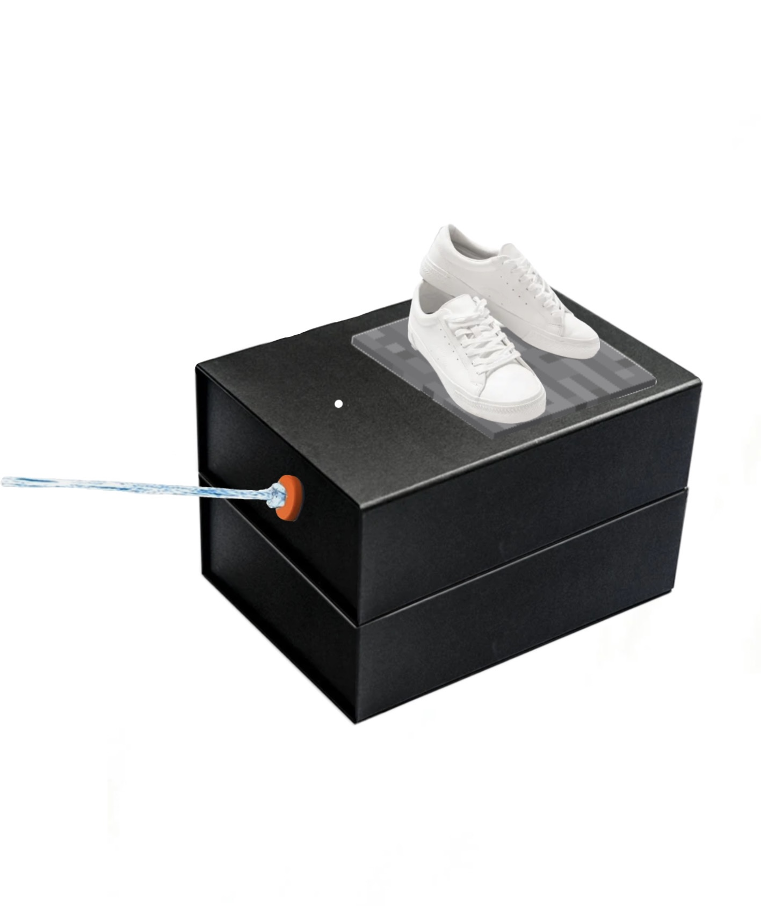
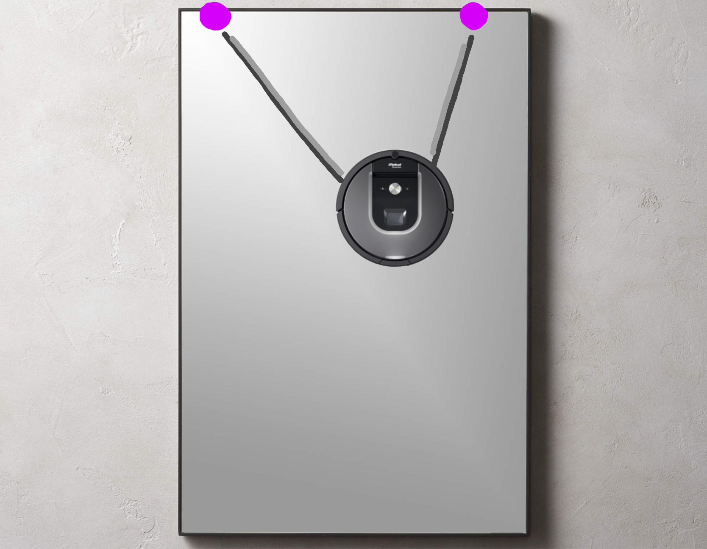
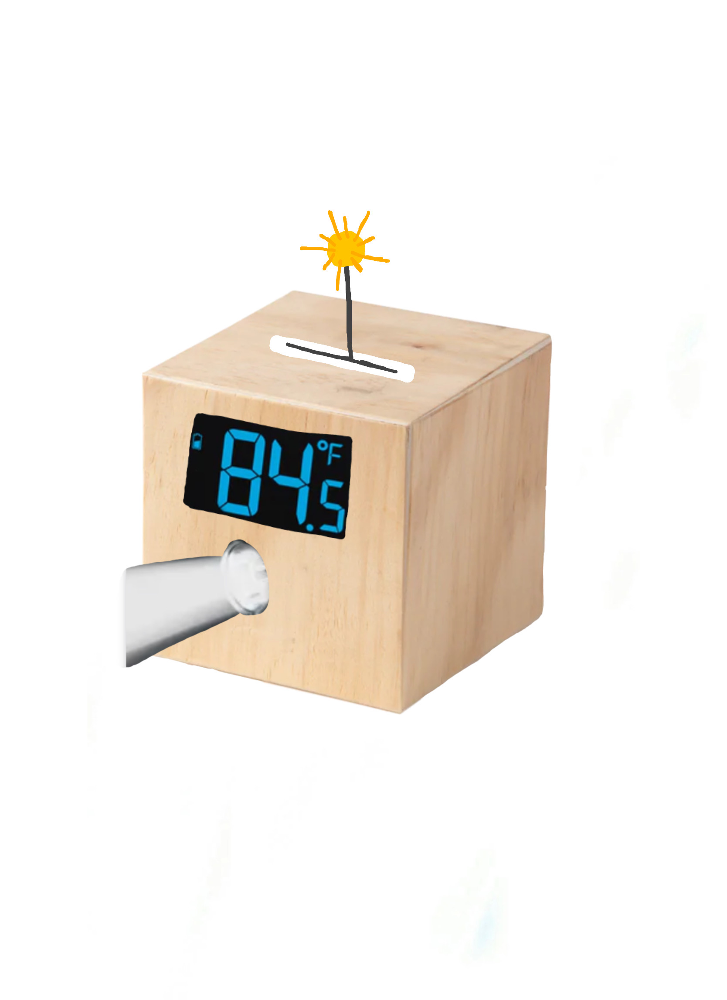

<h1 style= "text-align: center;">
Week 1: Project Proposals </b></h1>
On this page, I'm going to be proposing some of my project ideas. I didn't come into this class with any ideas for what I want to build but I've got some working ideas. I went about brainstorming a final project idea by going about my day-to-day life and seeing where different "gadgets" or projects could fit in to make my life more convienent.
<h2 style= "text-align: center;">
Idea 1: Shoe Taker-Offer </b></h2>
My first project idea is a machine that "encourages" people to take off their shoes when they enter my room. This would involve a box that tells a person to take off their shoes as soon they enter the room, this would ideally be triggered by the door opening. So, for example, when the door is opened there would be a sound that plays saying something along the lines of "Please Take Your Shoes Off Immediately". The person entering the room would then be encouraged by the machine to put their shoes on a pressure plate to shut off the machine. If their shoes aren't on the pressure plate then the sound will not turn off. If they don't take off their shoes in time, the machine would give them some sort of negative punishment. My first thought is a water gun that shoots them.
<div class="image-text-container">

<p> Here is a visualization of my shoe taker-offer. The minecraft pressure plate is where the person is supposed to put their shoes to turn off the machine. In this case, the person did not put their shoes on the plate in time and therefore is being squirted by water.</p></div>
<h2 style= "text-align: center;">
Idea 2: Mirror Cleaner </b></h2>
My second project idea is a window/mirror cleaner. My roommate and I share a bathroom and the mirror in our bathroom tends to gather water stains on it as the weeks go on. My idea is a mirror cleaner that clings to the mirror and cleans the mirror whenever it's turned on. The idea is basically a Roomba for my mirror. I'm not sure if a stick-on window cleaner would be feasible, I'm not sure how it would be able to suction onto the window as it moves around. Another option is that the window cleaner is attached to the window by strings or pulleys that are on the wall above the mirror. Again, I'm not sure how feasible this idea is.
<div class="image-text-container">

<p> Here is a photoshopped and drawn idea of what my mirror cleaner would consist of. I'm not sure how the cleaner would be able to apply enough force to the window to actually clean it so I'm not sure how feasible this idea is. </p></div>
<H2 style= "text-align: center;">
Idea 3: Weather Display Friend </b></h1>
My third project idea is a weather display friend. I'm constantly asking my friends/roommates what the weather is on a given day before checking the weather app. My idea is to create some sort of alarm clock-like box that displays the weather with cute cutouts. For example, if it's going to be sunny, a sun on an arm is displayed. If it's going to rain, a water droplet is displayed. Along with this, my weather display friend would show the temperature. The idea is to create a cute friend that displays the weather in the area that you're in.
Another idea that could be added to weather display friend is a mechanism that wakes you up with the weather. For example, if it's raining, the weather display friend will spray you with water to wake you up along with an alarm clock. If it's sunny, the weather display friend will shine a bright light in your face.
<div class="image-text-container">

<p> This is a rough idea of what my weather display friend would look like. In this case, it's roughly 84 degrees out and sunny. Therefore, the temperature is displayed and a sun on an arm is also displayed above the box. The box would wake you up with a bright light, since it's a sunny day. </p></div>
<h1 style= "text-align: center;">
Final Project </b></h1>
For my final project, I've decided to pursue the weather buddy. My weather buddy is going to be a box with a screen that displays the weather and some component that involves showing emojis or 3D printed parts depending on the weather.
I haven't gotten around to making a finalized 3D model of my project but I don't think my project needs a 3D model. The image above is pretty accurate as to what I want my project to look like. I don't need any materials that aren't available in the lab so making my weather friend should be pretty simple.
Here's a list of what I plan on using for my box:
<ul>
<li>Wood or 3D printed box (I haven't decided yet)</li>
<li>3D printed parts (sun and cloud)</li>
<li>Cervo motor</li>
<li>Display screen</li>
<li>Arduino Board</li>
</ul>
Since my project doesn't seem like it'll be too complicated, I don't have a specific timeline. I'd like to get my MVP done by the end of week 7 and finalize a material to use for my box. I'm still in between wood and 3D printed parts. After the functional parts of my box are completed, I plan on focusing on aesthetics. Since I hope to use this box in my everyday life and keep it in my room, I'd like to spend a good amount of time making sure the box is aesthetically pleasing and well put together.